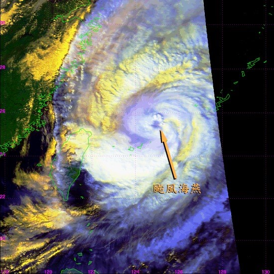
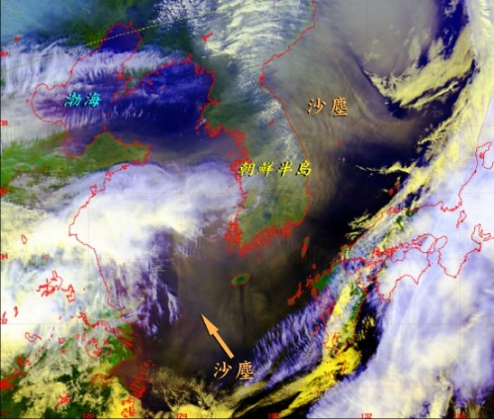
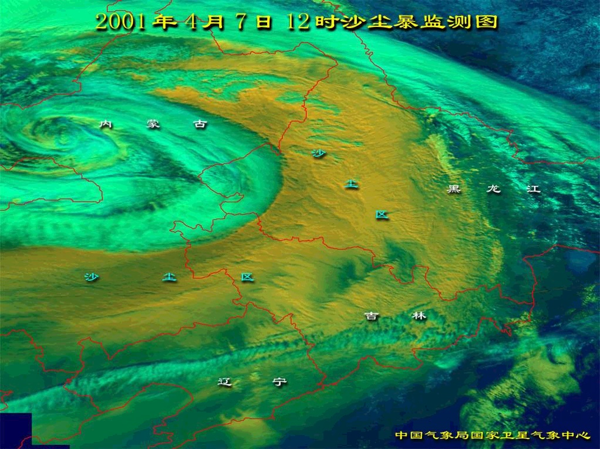
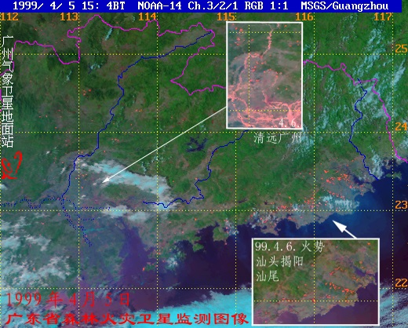
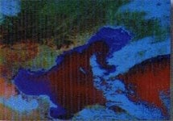
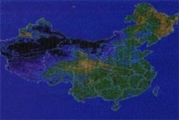
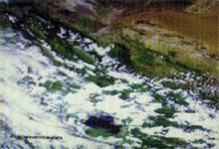
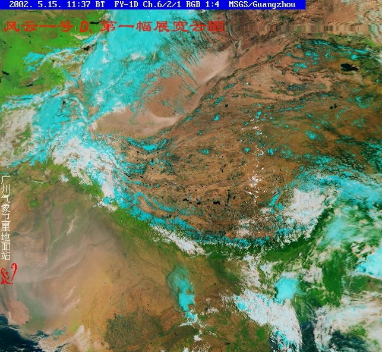
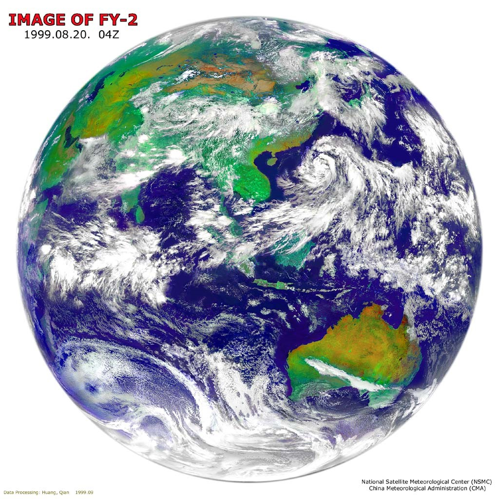
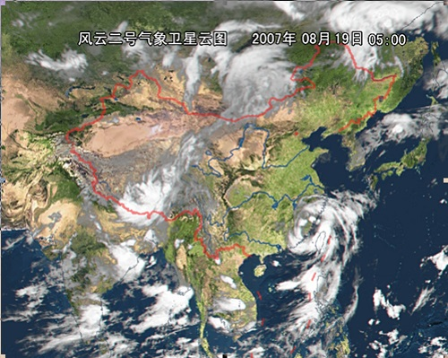

气象卫星系列
气象卫星概述
- 美国的“泰诺斯 ”(TIROS)卫星系列：第一代实验气象卫星，从60年-65年共发射了10颗，极轨气象卫星。
- 美国的雨云（Nimbus）卫星系列： 64-78年共发射了7颗，太阳同步轨道。
- 美国的艾萨（ESSA）卫星系列：66-69年共发射了9颗。
- 美国的NOAA卫星系列：70-94年共发射了16颗。太阳同步轨道。
1960年4月美国发射了第一颗气象卫星泰罗斯-1(Tiros-1)。随后，前苏联也相继发射了自己的气象卫星。目前，在轨道上运行的大多数气象卫星是由美国和俄罗斯发射的，其中很大一部分为极地轨道卫星，简称极轨卫星。
1966年美国发射第一颗业务气象卫星艾萨(ESSA)是极轨卫星，主要提供可见光云图。 1970年、1978年美国又相继发射诺阿(NOAA）和泰罗斯－N系列业务气象卫星。这些卫星都属于极轨气象卫星。极轨气象卫星的飞行高度一般在800－1500公里左右。由于卫星的飞行高度低，因此卫星照片分辨率高，图象清晰。
1974年，美国成功地研制了第一颗静止业务环境监测卫星(GOES)。静止业务环境监测卫星在赤道的某一经度、约36000公里高度上，它环绕地球一周约需24小时，几乎与地球自转同步。从地球上看好象卫星是相对静止的，故又称为地球静止卫星。
目前，日本GMS系列静止气象卫星、俄罗斯的GOMES卫星、欧盟 METEOSAT-3 卫星、印度的INSAT以及美国的两颗静止卫星(GOES-E和GOES-W)共6颗卫星组成地球静止气象卫星监测网。这些卫星位于赤道上空约36000公里高，每半小时向地球发送一次图片。
中国也先后成功地发射了9颗气象卫星（4颗风云－1和5颗风云－2）。依靠这些卫星，中国建立了自己的卫星天气预报和监测系统。风云－1是一种极地轨道气象卫星。风云－2是一种静止气象卫星。
| # | 时间 | 型号 | 发射星 | 类型 |
|---|---|---|---|---|
| 1 | 1988年9月7日 | FY-1 | A星发射 | 试验星 |
| 2 | 1990年9月3日 | FY-1 | B星发射 | 试验星 |
| 3 | 1997年6月10日 | FY-2 | A星发射 | 无 |
| 4 | 1999年5月10日 | FY-1 | C星发射 | 业务星 |
| 5 | 2000年6月25日 | FY-2 | B星发射 | 无 |
| 6 | 2008年5月27日 | FY-3 | B星发射 | 无 |
气象卫星的特点
- 轨道：低轨和高轨
- 成像面积大，有利于获得宏观同步信息，减少数据处理容量。
- 短周期重复观测：静止气象卫星30分钟一次；极轨卫星半天一次。利于动态监测。
- 资料来源连续、实时性强、成本低。
气象卫星的应用领域
- 天气分析与气象预报
- 气候研究与气候变迁的研究。
- 资源环境领域：海洋研究、森林火灾、水污染。
例子
- 
NOAA-16 热带气旋
- 
NOAA-16 沙尘暴
- 
沙尘暴监测
- 
森林火灾监测
- 
海水监测
- 
全国植被动态监测
- 
沙漠地貌
- 
祝贺风云一号D气象卫星发射成功!
- 
IMAGE OF FY-2
- 
风云二号气象卫星云图


{kind=link}
{kind=link}
{kind=link}
{kind=link}
{kind=link}
{kind=link}
{kind=link}
{kind=link}
{kind=link}
{kind=link}
{kind=link}
{kind=link}
{kind=link}
{kind=link}